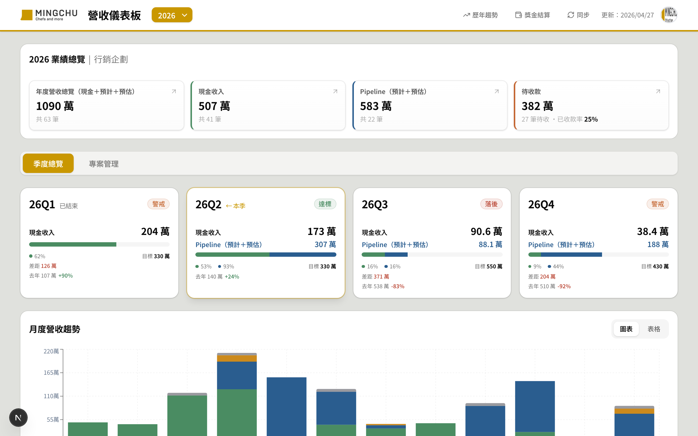
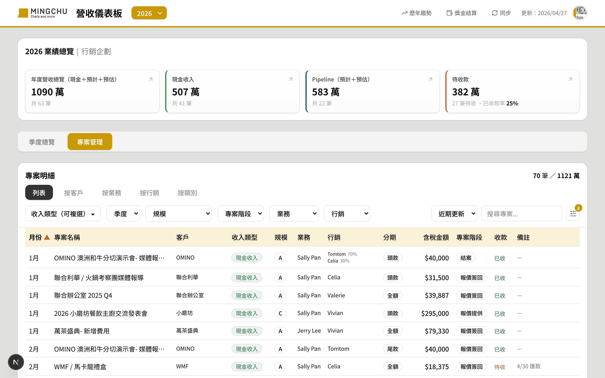
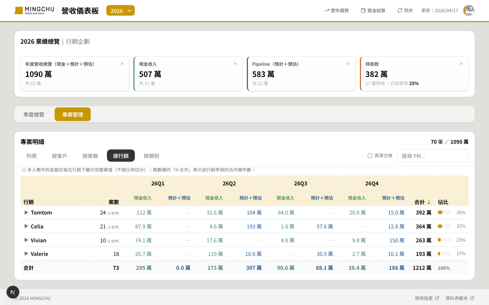
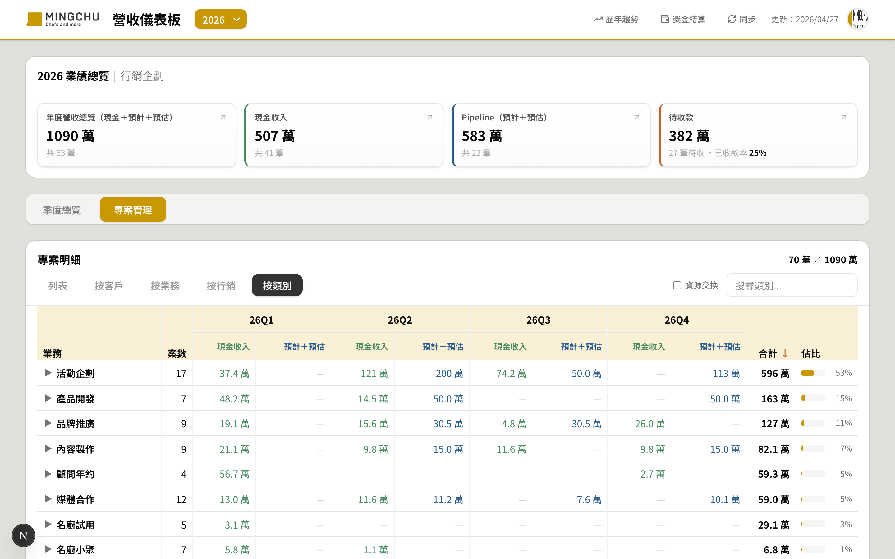
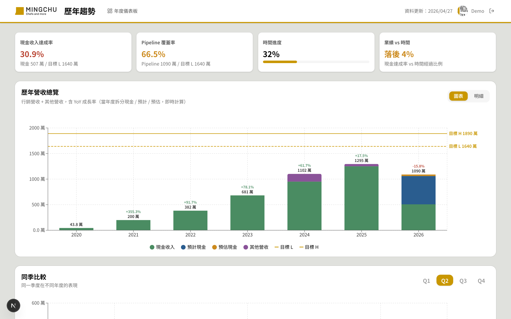
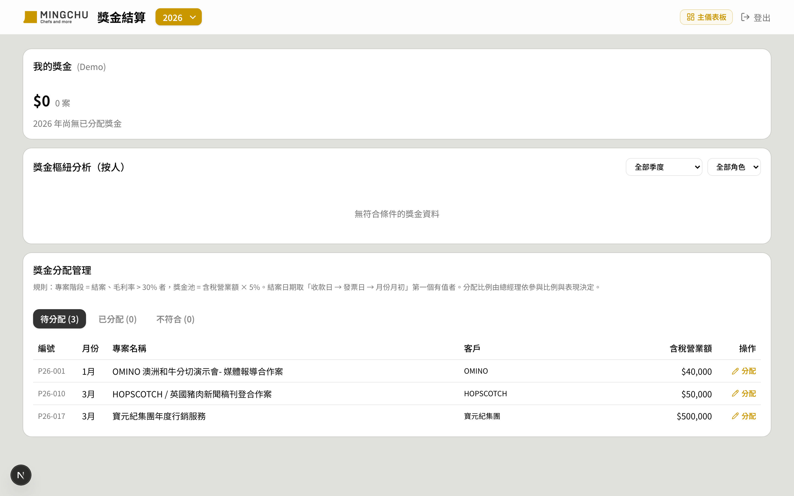

MINGCHU 營收儀表板
一個 8 人小團隊的營收儀表板，從業績追蹤、Pipeline 分析到結案後獎金分配，全流程在一個介面完成。

為什麼要做這件事
MINGCHU 是一間 8-10 人的行銷公司，主要服務食品/餐飲品牌客戶。原本的工作流程是：
- 業務在 Google Sheet 上維護「YYYY 營收」清單，記錄每個專案的金額、客戶、階段
- 每月、每季開會前，都要花時間手動 SUMIF / pivot 整理數字
- 結案後總經理要對 Sheet 算獎金（毛利率、池子計算、誰拿多少）
- 開會前都要花時間整理報表
- 同一份資料每個人想看的角度都不一樣（按客戶、按業務、按行銷、按類別）
- 沒有專案編號，多 PM 合作時績效歸屬不清楚
- 獎金計算規則複雜，每次結算總經理都要重新對 Sheet
- 資料容易打錯（PM 名字、類別等都是手填）
- Salesforce 太貴、不適合這種規模
- 員工已經習慣 Google Sheet 編輯，換工具阻力大
- 需求很客製（行銷比例、結案獎金規則）
最終樣貌
主儀表板已上線於 mingchu-revenue.vercel.app，包含四個主要頁面：
4 張 KPI 卡片（年度營收/現金/Pipeline/待收款）+ 季度進度條 + 月度趨勢圖。
5 種視角切換（列表 / 按客戶 / 業務 / 行銷 / 類別）、多維篩選、搜尋、欄位顯示切換。



歷年營收堆疊圖 + YoY + 客戶 YoY 表。

「待分配 / 已分配 / 不符合」三 tab，毛利率審核 + 獎金池計算 + 人員分配，僅總經理可見。

系統架構
| Tab 名稱 | 用途 |
|---|---|
| YYYY 營收 | 專案明細（每年一個 tab，A 欄編號自動產生） |
| 目標設定 | 年度 L/H 目標 |
| 歷年營收 | 各年度行銷+其他營收 |
| 人員設定 | 所有人員 + 角色 + 在職狀態 |
| 選項設定 | 階段 + 類別 master list |
| 獎金分配 | 系統自動寫入，總經理透過 /bonus 操作 |
技術選型
| 工具 / 技術 | 選的理由 |
|---|---|
| Next.js 15 + React 19 | 一套搞定前後端，AI 最熟悉的堆疊 |
| shadcn/ui (base-ui 版) | 元件夠用、能客製、樣式不會太「模板感」 |
| Tailwind CSS | 沒設計稿也能寫得快、看得過去 |
| Recharts | React 生態最成熟的圖表庫 |
| Google Sheets API v4 | 資料就在 Sheet，零搬遷成本 |
| Google Identity Services | 員工都有 Google 帳號，登入體驗好 |
| Vercel | 推 GitHub 就部署，環境變數好管 |
外部服務與金鑰
推進方式
整個專案不是一次規劃完，而是根據實際使用 + 規則演化逐步加功能。重要的推進策略：
每加一個功能，都先問：Sheet 上要怎麼存？欄位該長什麼樣？這個邏輯讓資料源永遠是「正確答案」，UI 只是 view layer。
獎金結算的規則一開始我以為是「固定率 × 個人貢獻」，做到一半才知道實際規則是「結案 + 毛利率 > 30% → 池子 = 5%、總經理主觀分配」。直接重做，沒堅持沿用舊設計。
例如「按行銷樞紐」的金額一開始按 H 欄比例切（為了算獎金基數），但後來獎金獨立模組後，比例切分反而誤導使用者。改回完整案值，但保留「N 合作」案數標示。
中途有大改 — PM → 行銷、Sales → 業務、新增營運總監/編輯/總經理角色。系統內部 key 維持英文（PM/Sales/CEO），UI 全用中文。這個語言映射讓未來 AI 能繼續寫 code 不混亂。
踩到的坑，讓我更懂的事
這個問題讓我意識到：UI 層的數字計算規則必須跟業務規則同步演化。當業務規則改了，原本「合理」的算法可能就變成誤導。
2026-15）。但團隊在 Sheet 上手動編輯時，會插入空白列、刪除列，列號就漂移了，獎金記錄對到錯的專案。洞察：使用者行為跟系統假設衝突時，修系統而不是教使用者。我們在 A 欄加「編號」（P26-001 自動產生），讓識別跟列號解耦。系統讀資料時自動 backfill 缺漏的編號，不需要手動維護。
洞察：master list（人員、階段、類別等）需要一個專屬地方，不要塞進業務資料 tab。讓使用者改設定時不要怕改壞別的。
洞察：UI 的容器形式要符合內容性質。一個有 8-10 個欄位的詳細資訊頁面，本質上是「side detail view」，不是「dialog」。
洞察：權限要分多層。ALLOWED_EMAILS 是「能登入」，BONUS_ADMIN_EMAILS 是「能看獎金結算」。不只是 API 拒絕，連 UI 入口也對非 admin 隱藏。
AI 怎麼幫我做的
- 所有程式碼撰寫
- API 設計與實作
- UI 元件 + 樣式
- debug 除錯
- 建議新做法（例如編號 backfill 機制）
- 業務規則的提供與澄清
- UI 取捨（要不要某個功能）
- 優先順序判斷
- 看到 demo 後決定怎麼修
- 跟 Sheet 端整合的最終驗證
- 症狀描述：截圖 + 描述「這個地方怪怪的」（不寫程式術語，AI 自己診斷）
- 規則溝通：用業務語言講需求，讓 AI 翻譯成資料模型 + UI
- 試錯確認：AI 改完後我截圖回報，再決定接受 / 修正方向
- 獎金規則重做：我以為是固定率，實際是池子 + 主觀分配。AI 主動建議重新討論資料模型，避免硬塞舊設計
- 多 PM 比例的用途反轉：AI 從程式角度問「比例現在不影響獎金，還要切金額嗎？」，幫我意識到該改回完整顯示
- 編號 backfill 機制：我抱怨「列號會跑掉」，AI 提案「在 A 欄加編號 + 系統自動填」，比手動維護更穩
如果繼續往下
- 新增/刪除專案：目前只能編輯既有專案，未來想從儀表板新增列、軟刪除（標記不顯示但保留歷史）
- 自動刷新：目前手動點同步，可考慮 Sheets webhook 推播
- 通知與提醒：待收款超過 N 天未收提醒、結案後 N 天未分配獎金提醒
- 獎金分配自動推薦：累積足夠歷史資料後，AI 可以建議分配比例（總經理確認即可）
Takeaway
資料源不變、介面層客製：Google Sheet 留著當資料庫，介面層做所有複雜功能。團隊不用換工具。
業務規則演化時，UI 邏輯跟著變：原本的設計如果跟新規則衝突，直接重做而不是疊加 patch。
權限分層：能登入 ≠ 能看到所有頁面 ≠ 能編輯所有頁面，三層獨立白名單。
1. 「我有一個 Google Sheet，欄位是 [...]。我想做一個能讀取、篩選、編輯的儀表板。最簡單的技術組合是什麼？需要設定哪些金鑰？」
2. 「業務規則是 [...]。你會怎麼設計 Sheet schema？哪些欄位該放主表，哪些該獨立成 master list？」